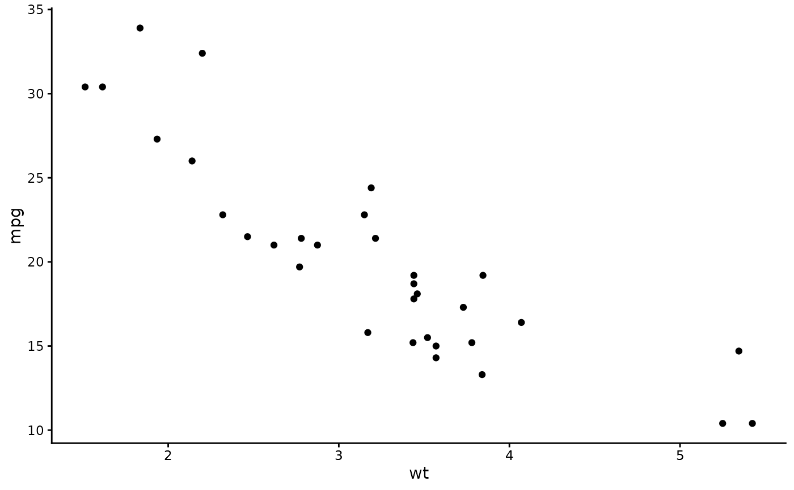
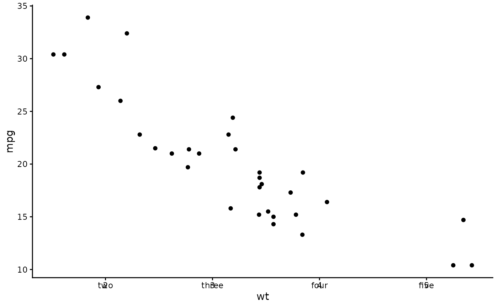
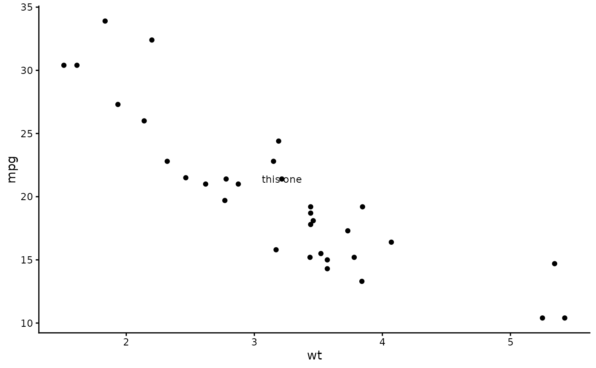

Draws text labels at specified break positions along an axis, or at
arbitrary (x, y) coordinates. Style defaults are taken from the axis.text
element of the set theme. Requires coord_cartesian(clip = "off").
Usage
annotate_axis_text(
...,
position = NULL,
x = NULL,
y = NULL,
label = NULL,
colour = NULL,
size = NULL,
family = NULL,
length = NULL,
hjust = NULL,
vjust = NULL,
angle = 0,
element_to = "keep"
)Arguments
- ...
Named arguments. Support trailing commas.
- position
One of
"top","bottom","left", or"right". Inferred fromx/yif not provided.- x
A vector of x positions. Use
I()for normalized coordinates (0-1). When combined withy, triggers arbitrary positioning mode.- y
A vector of y positions. Use
I()for normalized coordinates (0-1). When combined withx, triggers arbitrary positioning mode.- label
A vector of labels or a function that takes breaks and returns labels. Defaults to formatted break values.
- colour
Inherits from
axis.textin the set theme.- size
Inherits from
axis.textin the set theme.- family
Inherits from
axis.textin the set theme.- length
Offset from the axis edge as a grid unit, including tick length and margin. Supports
rel(). Negative values place labels on the inside of the panel. Axis mode only.- hjust, vjust
Justification. Auto-calculated from position if
NULL.- angle
Text rotation angle. Defaults to
0.- element_to
One of
"keep","transparent", or"blank". Controls whether native theme axis text is suppressed. Defaults to"keep". Axis mode only.
Details
When only x or only y is provided, the function operates in axis mode
and labels are placed relative to the relevant axis edge. When both x and
y are provided, labels are placed at those exact coordinates.
Examples
library(ggplot2)
set_theme(theme_classic())
p <- ggplot(mtcars, aes(wt, mpg)) +
geom_point() +
coord_cartesian(clip = "off")
# Bottom axis labels at specific breaks
p + annotate_axis_text(position = "bottom", x = c(2, 3, 4, 5))

# Custom labels
p + annotate_axis_text(position = "bottom", x = c(2, 3, 4, 5),
label = c("two", "three", "four", "five"))

# Inward labels using negative length
p + annotate_axis_text(position = "bottom", x = c(2, 3, 4, 5),
length = grid::unit(-15, "pt"))
# Arbitrary positioning — label a specific point on the plot
p + annotate_axis_text(x = 3.215, y = 21.4, label = "this one")
